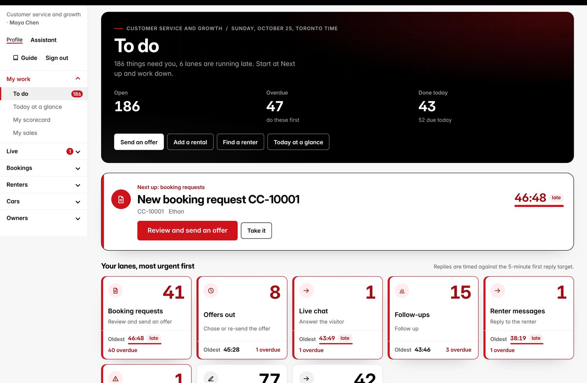
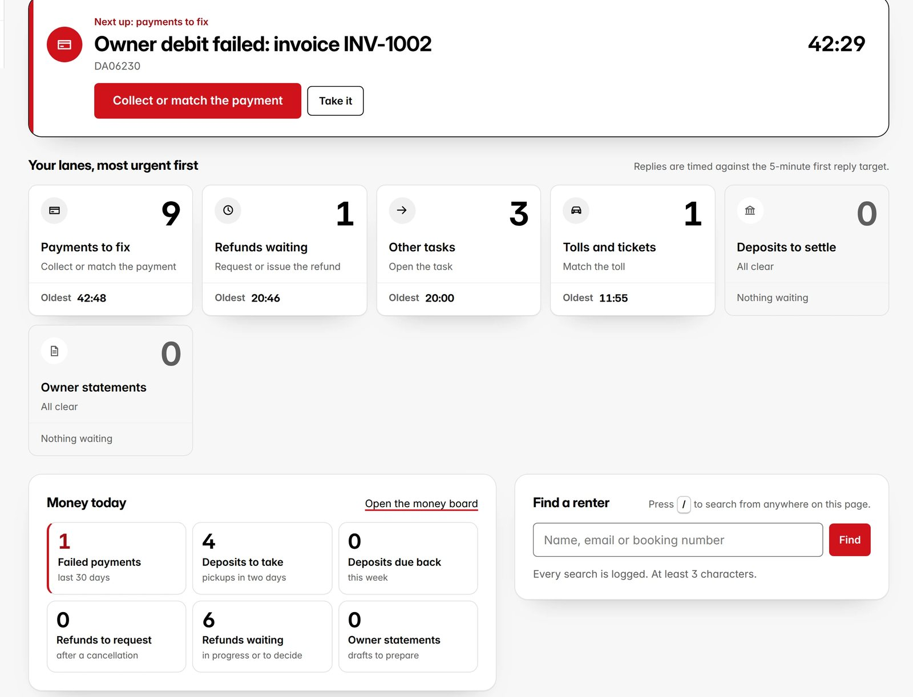
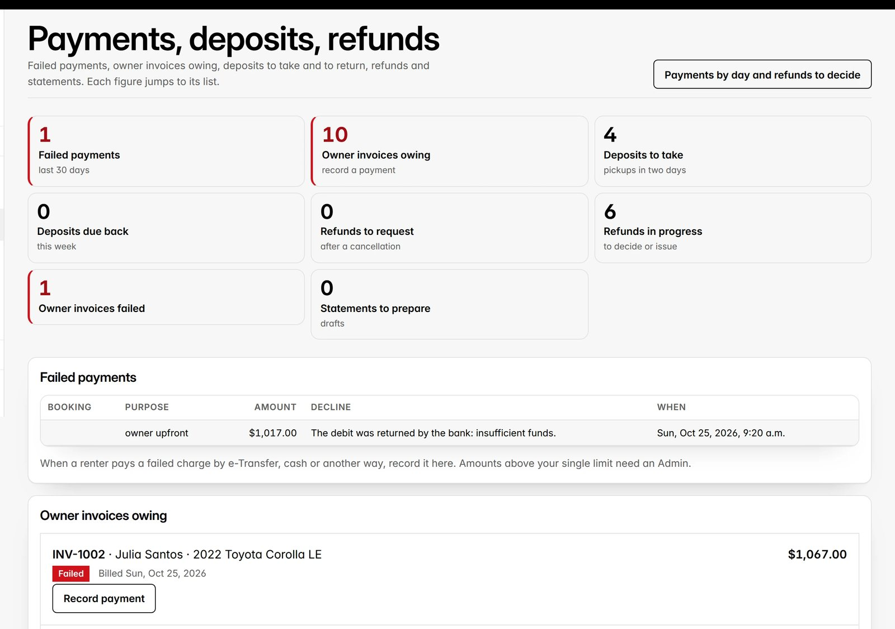
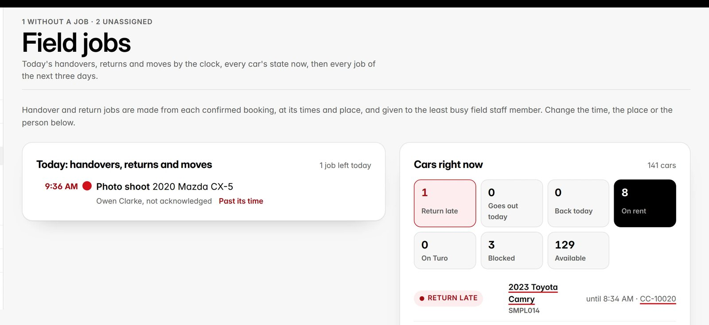

CarmaCars assistants (VAs) in Customer service, Finance, Fleet and Sales. Read chapter 1, then the chapter for your function. If you cover more than one, read each of them.
What you need
The invitation email from CarmaCars (the link works for 24 hours)
A computer for your shift. The portal also works on a phone
An authenticator app on your phone, if your Admin turns on two-step sign-in
Sign in at
carmacars.ca/sign-in?next=/va
You land on To do, the tasks of your function.
Your first sign-in
1
Open the invitation email and press its link within 24 hours. Choose a password of 8 characters or more and press Save the new password.
2
You land in your portal, on To do, working as your main function.
3
At the top of the page, fill in your Home address and Postal code and press Save my home address. You need it before you add a rental or earn a commission. Change it later under Profile, at the top of the menu.
4
Next time, sign in at carmacars.ca/sign-in with your Email and Password, then Sign in.
5
Link expired? Press Send me a new link on the page it opens, or ask an Admin for a password link.
6
Sign in with your phone: on Profile, press Add and verify my phone number and enter the 6-digit code we text you. Then press Use my phone number instead on the sign-in page. Two-step sign-in still asks for your authenticator code.
3
Inside
Contents
→Start hereWho this is for and your first sign-in.2
01Your workdayThe menu, To do, task actions, Today, switching functions and your scorecard.6
02Customer serviceRequests and offers, new quotes, renter messages, find a renter, owner forms, late returns.12
03Chauffeur requestsQuote and confirm a chauffeur request; partner cars with insurance included or no credit card needed.24
04FinancePayments, deposits and refunds, tolls and tickets, reconciliation and Turo trips.26
05FleetField jobs, daily checks, photo reviews, similar cars and listings.34
06SalesRequests and offers, new quotes and owner leads.42
07Add a rental by handChoose the car and dates, find the renter, price it, record how it is paid.45
08CommissionsI sourced this client, your rate, when it is earned, approved and paid.49
09Live visitors and live chatWho is on the site, how likely each visitor is to book, one-click actions, follow-ups, the chat inbox.51
10Texts and callsReading and answering texts, suggestions, unknown callers and missed calls.53
11Discount game leadsGame leads to call or email, the code they won, whether it is used, and the Sales task.55
12Add-onsAdd-ons in offers and rentals, confirming a chauffeur, Fleet tasks and stock.56
13AssistantAsk about today, bookings, cars and money; send offers and add rentals; confirm the changes it prepares.58
14Car maintenanceThe maintenance list, recording a service in one step, tires and swaps, readings, and billing.60
15Shared toolsThe calendar and Find a renter.62
→Quick referenceOne page with the essentials.64
01
Chapter 1
Your workday
Every function works the same way: start on To do, take the oldest task, finish it, and check Today for pickups and returns. The menu keeps your own work first, then the screens of your function in a few groups.
The menu
My work comes first: To do, Today at a glance, My scorecard and My sales. Customer service and Sales then have Live: Live chat, Live visitors and Game leads. Then the groups of your function. The current group is open; press another to open it. On a phone the whole menu sits behind one Menu button.
Function
Groups and pages
Customer service
Bookings (Requests, Chauffeur, Send an offer, Add a rental, New quote, Calendar, Find a car), Renters (Messages, Find a renter, Review requests, Card coverage), Cars (Listings, Similar cars), Owners (Owners and enquiries, Add a car for an owner, Owner forms)
Sales
Bookings (Requests and offers, Chauffeur, Send an offer, Add a rental, New quote, Calendar, Find a car, Card coverage), Owners (Owner leads)
Finance
Money (Payments by day, Payments, deposits and refunds, Tolls and tickets, Reconciliation, Turo trips), Renters and bookings (Find a renter, Calendar), Rentals (Add a rental, New quote, Find a car, Card coverage)
Fleet
Field work (Field jobs, Field hours, Daily checks, Photo reviews), Cars (Listings, Similar cars, Calendar, Calendar sync, Add a car for an owner), Renters (Find a renter), Rentals (Add a rental, New quote, Find a car, Card coverage)
To do
Tasks come to your function on their own: new requests, renter replies, failed payments, toll notices and more. To do puts the most urgent first.
1
The top shows your function, today's date, how many things need you, your open, overdue and done-today figures, and your quickest actions.
2
Next up is the one task to do now. Press its button to do it, or Take it to make it yours.
3
Your lanes group the work, for example Booking requests, Renter messages, Texts and calls, Live chat and Offers out. Each shows how many are waiting and how long the oldest has waited. Replies are timed against the 5-minute first reply target: past it the time turns red and says late. The most urgent lane comes first; press a lane to open it.
4
Customer service and Sales: Waiting for a reply lists every request, renter message, missed call and chat, the longest wait first, each with its reply button. Sales also sees the commission ring and Follow-ups due, Fleet today's handovers, returns and moves and the cars right now, Finance Money today.
5
Every open task: filter All, Mine, Unassigned or Waiting. Under More filters: Any time, Overdue, Due today or Escalated, and by type. Each row has a priority, the task, its record, when it is due and a live timer of how long it has waited.
6
Press Take it to make it yours. Pressing the task opens the screen where it is done: a chat waiting for a person opens that chat, documents to check open the review, a request opens the booking. Sheet opens the step-by-step procedure.
7
Tasks close by themselves when their work is done elsewhere (an invoice paid or voided, a chat answered or closed); a day's opening and closing checks close at the end of that day.
8
On a computer, press / to search (Find a renter; Sales: Find a car).
carmacars.ca/va

123
Work a task
Open the task. The buttons along the top move it on.
Button
What it does
Open the working screen
Jumps to the booking, car or owner the task is about.
Done
You finished it. It leaves the queue.
Waiting
You are waiting on someone (a renter, an owner). It stays yours.
Escalate
It needs an Admin. Add why.
Hand over
Give it to someone else on the team.
Add a note
Leave a note for whoever looks next.
Today
1
Today lists pickups and returns, and what is due, for your function.
2
Press a booking number to open it. To do takes you back to your tasks.
carmacars.ca/va/today
1
Documents to sign
Your staff agreement, when CarmaCars sends it.
1
The queue shows "You have a document to sign". Press Read and sign.
2
Check the key values at the top (your role, hours, rate and start date), then press Read the PDF and read it.
3
Press Sign. Your full legal name is your signature (or press Draw instead). Several documents? One signature covers all of them. The signed copy stays on the same page.
Several functions? Switch with Working as
If you cover more than one function, Working as above the menu lists them: Customer service, Finance, Fleet and Sales. Choose one; the menu, To do and Today change to that function.
Your scorecard
1
Open My work›My scorecard.
2
By week shows each measure, its target and your result for each week.
3
A task meets its target when done by its due time. Daily checks count when done by 9:00 and 18:00.
4
The first reply target is 5 minutes: a new booking request, an enquiry, a change the renter asked for or a renter message is due 5 minutes after it comes in. An Admin sets it in Program settings, and the target column shows the one in force.
carmacars.ca/va/scorecard
12
02
Chapter 2
Customer service
You answer requests with offers, quote callers, reply to renters, look renters up, and review owner forms. You are often the renter's first person.
Your rail: Queue, Today, Requests, New quote, Renter messages, Find a renter, Calendar, Listings, Similar cars, Owners and enquiries, Owner forms and Scorecard.
Answer a request
1
Open Requests. Filter by New, Waiting on the renter, Pushed back, Offer out or Offer expired.
2
Waiting shows how long the renter has waited. Open the booking number.
carmacars.ca/va/requests
12
3
On the Review tab, check the request: the car is free, the renter, the places.
4
Press Adjust the booking to change the car, dates, places, price or extras, then Save changes.
5
Add a message and press Send the offer. Within your limit you can also use Approve (within my limit) or Approve and send the pay link.
6
Can't do it? Decline with Reason and any alternative. Need to know more? Ask the renter.
carmacars.ca/va/bookings/CC-10069?tab=review
34
An enquiry on an example car
Some cars on the site are marked "Example car": samples that show the kind of cars we rent. A request on one is an enquiry, never a booking.
1
The task Suggest a similar real car comes to To do with the enquiry number (EQ-1001 and up), the car asked for, the dates and the contact. When a real car was free for those dates, the task names it after Free: (the same make and model first, else the same class and body at a similar price), and the person was told we have a similar car and will confirm it within 2 hours.
2
Check the named car is still right for them (or find a real car of the same kind and price that is free for those dates), and make a New quote for it.
3
Call or email the person with the car and the price, then mark the task done.
A request from a vehicle page
Every make, model, year and trim page (carmacars.ca/cars/toyota/rav4/2023/xle, for example) has Request it, for the exact car the person wants.
1
The request arrives as an enquiry with the car named in the message ("About the car: 2023 Toyota RAV4 XLE") and an Enquiry task in To do.
2
If we have that car, or one close to it, free for their dates, make a New quote for it. If not, suggest the nearest car of the same kind and price.
3
Reply by email or phone, then mark the task done.
A buyer lead from a /buy page
Every vehicle page has a for-sale twin (carmacars.ca/buy/toyota/rav4/2023/xle) with "Find me this car", and twins for financing, detailing and body shop work with their own request: a name, an email or phone, and when.
1
The lead is in Owner leads (customer service: Owners and enquiries), Buyer leads (kind buyer, finance, detailing or body shop), with the car and what they asked, and a To do line for Sales: A buyer asked us to find a car, Someone asked about financing or leasing a car, A detailing request, or A body shop request.
2
If one of our cars of that kind is for sale (an Admin flags it with its price), offer it. If not, offer to rent them the car for a week first, and say what we can find. We do not lend or lease: on a financing question, say so and offer the rental. For detailing or body shop work, give a time and a price, and always offer a rental while their car is in (an insurance replacement rental when it is a claim). For mechanical work (a "Mechanical work to arrange" task: an oil change, brakes, tires, a tow and the like), CarmaCars does not do the work: book it with a trusted shop or recommend one, never promise the shop's price or time, and offer a rental while their car is in.
3
Press Take it, then Update as you go: contacted, qualified, converted or closed with the reason.
Send an offer to a caller
Open Send an offer (or Send an offer beside a car in Find a car). No request needed: one screen, and the renter has the link.
1
Find the customer by name, phone or email, or press Add a new customer: full legal name, mobile, email and date of birth. Already on file with that email or phone? Use them: never a second record.
2
Choose the car (by car code, plate or name; each says Free or Not free), the dates and the places.
3
The price: the rate sheet, a total or a rate per day, with the reason for a price you type. The deposit, discounts and fees are set by an Admin; customer service sets the Protection Plan price.
4
How the rental and the deposit are paid (card online, e-Transfer, cash, platform payout, the insurer; deposit by card hold, cash or e-Transfer), who found this client, the message, how long it is open (48 hours at most) and Email, Text or both.
5
Check the offer as the renter will see it on the right, then press Send the offer.
New quote for a caller
1
Open New quote. Choose the Car, the Pickup and Return (at least 2 hours from now).
2
Choose how the lead came in, then the caller's Full legal name, Email, Mobile and Date of birth.
3
Set the Licence class and Damage cover, and note places, extras and what they asked.
4
Press Create the request. It opens like any request; send the offer from there.
carmacars.ca/va/quotes/new
1234
Edit a booking, a fee or the renter
A booking that is confirmed, on trip or returned is edited directly; the renter's details are corrected from the booking.
1
Overview, Edit the booking: the return (extend or shorten), the car, the rental charge, each fee, the kilometres and the note. Tick Email the renter what changed, or leave it off for a silent correction.
2
Money tab, Fees, Change or add a fee: a fee forgotten (the young driver fee shows its price for the dates) or a charge of its own.
3
What is open shows at once: Email a pay link or Text a pay link for exactly that amount, or record cash or an e-Transfer (Record a payment, For: the rental and fees).
4
Edit renter: a wrong email, phone, name, licence or address. A new email is their sign-in at once.
5
The same renter twice? Under the renter, Possible duplicates: Merge into this record moves everything of the other record here.
Renter messages and Find a renter
1
Renter messages lists the latest messages with their booking. Open the booking to reply, then press Send.
2
Find a renter: search by name, email, phone or booking number.
3
To open a renter's private details, press Open with a reason. The reason is kept in the access log.
carmacars.ca/va/messages
1
Add a car for an owner
Open Owners›Add a car for an owner (fleet: under Cars). You enter everything for the owner; they never fill in the application.
1
The owner: find them by name, email or phone, or choose New owner and enter the name, email, phone and address.
2
The car: type the VIN. The car is looked up at once and shown in one line with the year, make, model, trim and details (Edit if something is wrong). No VIN at hand: add it by its plate and choose the year, make and model. Tap the colour and check the class. Upload the ownership permit, the insurance slip and the lender's information if you have them. Photos are optional.
3
Terms and first invoice: what was agreed with the owner, to the cent. An Admin checks them before anything is sent.
4
Who sourced the owner: Entered for CarmaCars, or I sourced this owner. How the owner signs: by email, or on paper.
5
Press Add the car and send to an Admin. The application waits in the Admin's Applications, marked Entered by staff with your name. When the Admin approves, the owner gets one email to review and sign.
Owner forms (Forms C and D)
1
Open Owner forms. Each row is a scan an owner uploaded, with the witnesses and the status.
2
Press Open to read the scan. Check every page is there and signed, with each witness's signature and name.
3
Press Approve, or Send back with What to fix (the owner reads this).
carmacars.ca/va/owner-forms
23
A rental agreement signed on paper
1
Open the booking. Under Signed on paper, press Record paper signature.
2
Choose the Rental agreement, or the booking change the renter signed.
3
Check Signed by and Date signed, and upload the scan of every signed page.
4
Press Record signature. It counts as signed, and the renter is not asked to sign again.
Signatures on the spot, or by link
A renter or an additional driver who has not signed yet.
1
On the booking, press Sign now on this device. Confirm the name and that you saw the original licence, then Hand the device to the signer.
2
Or press Email the signing link or Text the signing link: they sign on their own phone.
3
The licence comes first: the renter uploads it from the request, and the offer cannot be accepted without it.
The booking's rental agreements
The Rental agreements card keeps both agreements in step with the booking.
1
Any change after signing makes a new version by itself. A change to the dates, the price, the car, the drivers or the coverage waits for the renter's signature: they get the link by email and text, and the card says "Agreement v3 waiting for signature".
2
Resend the signing links, or press the button with their first name beside it to have them sign on your device.
3
Fields still blank (a licence expiry, an insurer's policy number) are listed: type them and press Save the missing fields. Check-out stops on a field a claim needs until it is filled or an Admin overrides.
4
Every signature: a code to the signer's phone or email, the key terms initialled, three consents, a drawn signature.
Check renter documents
The renter's licence photos, selfie and proof of coverage, before the handover.
1
Open the task "identity documents or coverage proof to review", or open the booking: Review shows the documents of any booking being arranged or under way, with no task needed.
2
Every licence image, selfie and proof of coverage of the booking is on one screen, with what to check written once above them: the name and date of birth, class G2 or G and valid past the return, the selfie matches, the coverage is active to the return date.
3
One is wrong? Open Reject this one under it, type the reason the renter reads and press Reject.
4
Then press Approve all: everything still waiting is approved at once (the Protection Plan too). A document the system refuses is named with the reason; the rest are approved.
Which credit cards include rental car coverage?
Renters ask this often. Renters›Card coverage (every function has it under Rentals or Bookings) is your quick reference: what to say, what to check, and the list.
1
Send the renter carmacars.ca/credit-card-rental-coverage: each card's car value limit (MSRP), longest rental, key exclusions, its official guide and the day we last checked it.
2
Ask which car they want. Most Canadian cards stop at a car priced $65,000 or $85,000, and many luxury models are priced higher. Give them the car's model year and trim so they can check.
3
Never tell a renter they are covered. Their card's issuer decides that: ask them to call the number on the back of their card about this car and these dates. CarmaCars does not decide claims.
4
Over the limit, an excluded make, a debit card or a longer rental than the card allows: offer OPCF 27 on their own auto policy or the CarmaCars Protection Plan.
Review requests
Renters are asked for a review by email and text after each trip. Renters›Review requests shows the ones on hold and the Google reviews to match.
1
On hold: the booking has a charge that is not settled or waived yet (late return, kilometres, fuel, cleaning, smoking, damage, tolls) or an open incident. It leaves the list by itself once the charges are settled or waived.
2
The renter should be asked now anyway? Press Send anyway. Should never be asked? Press Do not ask.
3
Google reviews: a possible match to a renter shows "possible match". Press Confirm if it is them, Not this renter if not, or Match to a booking with the booking number.
4
On a booking, the card Review requests has Ask for a review (for example after a call that went well) and Mark reviewed when the renter says they already left one.
A change to a confirmed booking
On a booking's Changes tab you can propose new dates, times or another car, as an Admin does: set the change, write the reason, press Preview the price, then Send to the renter. The renter has 48 hours to accept and sign the amendment. You also send a new signing link to an additional driver from the booking screen.
A late return
A booking past its return time shows the late return panel. Work it in order:
Button
When
Log a call
Record each call to the renter and what they said.
Send T13
The first late notice email.
Send T14 (final notice)
The final notice.
Request disable
Ask an Admin to approve disabling the car.
Open an incident
When the car is not coming back as planned.
03
Chapter 3
Chauffeur requests
Customer service and Sales handle the chauffeur requests sent from carmacars.ca/chauffeur, and answer questions about the partner cars on the site.
Quote a chauffeur request
A new request is a task in your queue: Chauffeur request CH-1001, with the vehicle, the date, the hours and the client's contact.
1
Open Chauffeur from the task (or the menu). Find the request by its number.
2
Check the vehicle and the driver with the partner for that date and time.
3
To change the vehicle or the hours, press Change. The quote is worked out again: 2 hours at the 2-hour rate, 3 hours or more at the 3+ hour rate for every hour, then HST.
4
Send the quote line to the client by email or phone. Press Quoted and write how you sent it.
5
When the client agrees and the payment is arranged, press Confirm. After the trip, press Completed.
Partner cars: insurance included, no credit card
Some partner cars say Insurance included: no personal auto policy needed and No credit card needed: debit accepted on their page.
1
On these cars the renter does not choose a coverage option: the booking shows "insurance included with the car", already confirmed. There is no proof to review.
2
The renter may pay with a debit card in their own name. A prepaid card is still refused.
3
The deposit, the licence and selfie checks and the ages are the same as on every car.
4
Partner cars without a confirmed model year say "Year confirmed when you book". An offer cannot be sent until an Admin confirms the year: ask an Admin.
04
Chapter 4
Finance
You keep the money right: payments, deposits and refunds, toll notices, processor payouts and Turo trips.
Your rail: Queue, Today, Payments, deposits, refunds, Tolls and tickets, Reconciliation, Turo trips, Find a renter, Calendar and Scorecard.
Your queue
Finance tasks include failed owner debits, toll notices with no match, statements to review and refunds to issue.
carmacars.ca/va

1
The lanes show what Finance handles: payments to fix, refunds waiting, tolls and tickets, deposits to settle and owner statements. Money today counts them below.
Payments by day
Payments by day is your day in one screen: every payment and refund, by method, with the cash drawer and the refunds to decide.
1
Choose From and To (today by default) and tick the methods you want (card, e-Transfer, cash, cheque, platform payout, insurer and others; none ticked shows all), then press Show.
2
Totals by method: received, refunded and net. Each day: the same by method, the cash expected in the drawer (cash received less cash given back) and the cash counted.
3
At the end of the day count the drawer and press Record the count. The difference shows "balanced", or "over" or "short" with the amount.
4
Refunds waiting: every refund asked for anywhere (a cancellation, a booking, Finance), with the policy maths (paid, the tier, the percentage back, what is kept). Press Approve or Decline with the reason in the same row; above your limit it says an Admin approves. Approved: Issue the refund.
5
Export CSV gives the same rows for the bank or the bookkeeper: refunds as negative amounts, holds marked as not money in.
Payments, deposits, refunds
1
Failed payments: each with the purpose, amount and the bank's reason.
2
Deposits to take before pickup, and deposits due back.
3
Refunds in progress. Press Request the refund and choose What it refunds (the rental charge, delivery or pickup, kilometres, add-ons or other charges); above your limit it waits for an Admin. Then Issue the refund.
4
Owner invoices that failed, and owner statements to prepare.
carmacars.ca/va/money

1234
A payment received another way
An owner or renter paid by e-Transfer, cheque, cash or bank transfer.
1
Owner invoice: on Payments, deposits, refunds, find it under Owner invoices owing and press Record payment.
2
Renter: beside the failed payment, press Paid another way. Or open the booking's Money tab: under Money by part press Record a payment, choose what it is for (the rental, fees, the deposit or a later charge) and how it was paid, then Record it.
3
Choose Paid by, the Date received and the Reference (the cheque number for a cheque). Leave Amount empty for the full balance; type less for a partial payment.
4
Add the proof if you have it (a screenshot or a photo of the cheque), then press Record payment.
The invoice is marked paid or partly paid, the automatic debit stops for that amount and the owner gets a receipt. Above your single limit the payment needs an Admin. Recorded something wrong? Ask an Admin to void it; you cannot void a payment.
Each month's payments recorded by hand are listed under Reconciliation, with the totals by method, to check against the bank.
Cards, holds and deposits given back
On the booking's Money tab.
1
Charge the saved card: a later charge (extra kilometres, fuel, damage, a late return) with the reason on the renter's receipt, or the deposit of a rental over 7 days.
2
A deposit hold: Capture the hold for all of it, with the reason. A part capture (the rest is released) or Release the hold waits for the settlement while the car is out, inside the toll window or while something is open; an Admin may do it with the reason.
3
A deposit taken in cash or by e-Transfer is given back the same way: the task Give the deposit back the way it came; then press Returned with the reference or receipt number.
Settle a deposit
The deposit is never given back by itself. Finance or an Admin settles it after the return: on the booking's Money tab, under Deposit, press Settle the deposit. Issue the Check-in statement first.
1
The form shows the deposit, what is still available, the charges owed from the statement and what is taken from the deposit for them. What the deposit does not cover is charged to the card on file; with no card (or a card declined), the renter gets a pay link by email and text, and Finance has a task until it is paid.
2
Tolls and tickets can take up to 7 days to come in. Inside that window the whole rest of the deposit is filled in as the hold-back, until the window ends. To give it back sooner, tick Release now anyway: a toll that comes in later is charged to the card on file.
3
Something still open keeps the whole deposit: an incident, a claim, new damage at the return not priced, damage found later not billed, a toll or ticket on the car during the rental not matched or not charged, a card dispute, or charges not on a statement yet. The form lists them. Only an Admin can release part of it, with the reason; it is recorded.
4
Damage: an Admin keeps the whole deposit (Keep the whole deposit (damage)) or bills a damage charge up to the $2,500 deductible. Ask an Admin, with the photos.
5
Press Settle. The money moves at Stripe at once: the charges are collected and what is not owed is refunded or the hold released. A step Stripe refuses is tried again by itself, and Finance gets a task if it keeps failing.
Read a toll notice
1
Open Tolls and tickets and press Read a notice.
2
Choose the file: a PDF, a photo or a CSV, under 15 MB. Leave the reading profile to find it from the text.
3
Press Read it. Then check each line beside the notice and fix what was read wrong.
4
Press Checked against the notice on each line (Leave out to skip one), then Save as checked and Confirm and import.
carmacars.ca/va/tolls/read
234
carmacars.ca/va/tolls
1
The work queue: Unmatched, Needs review, Matched not charged and Disputed, with each notice's plate, date, amount and match.
Reconciliation and Turo trips
1
Reconciliation: press Record a processor payout, then Match it to the payments it contains. Anything still unmatched at the closing check goes to an Admin.
2
Turo trips: press Add a trip for one trip, or paste CSV rows and press Import.
carmacars.ca/va/turo
2
05
Chapter 5
Fleet
You keep the cars moving: field jobs, daily checks, photo reviews after returns, and the listing pipeline with its duplicate check and plate covering.
Your rail: Queue, Today, Field jobs, Field hours, Daily checks, Photo reviews, Calendar, Listings, Similar cars, Find a renter and Scorecard.
Schedule field jobs
Every confirmed booking gets its handover (or delivery) and return (or pickup) jobs by itself, at the booking's times and place, given to the field staff member with the fewest jobs that day. You check and change them.
1
Jobs, next three days: each with its place, its field staff and whether they acknowledged it. "Made from the booking" marks the ones made by themselves; when the booking moves, they move too, unless you changed them.
2
Change a job with Assign, Reassign, Move (time and place) or Cancel.
3
Handovers and returns without a job (when the automatic jobs are off, or one was cancelled) are listed first: press Schedule, the place filled in from the booking.
4
An Admin turns the automatic jobs or the assignment off in Settings > Program.
carmacars.ca/va/fleet

1
Field hours
Field staff clock in and out on their phones. You see who is clocked in and every shift of the two-week pay period, and you fix what they cannot.
1
Open Field hours. Clocked in now lists who is on, since when. Earlier period and Later period move between pay periods.
2
Someone forgot to clock out: press Clock out for them, set the time they finished and write the reason.
3
Someone forgot to clock in, or a time is wrong: Add hours enters a shift, Change fixes one and Remove takes one out. Each needs a reason; the change is kept in a log with what it was before.
4
Once an Admin approves the pay run of a period, its shifts are locked: ask the Admin. You see hours only, not rates or pay.
Daily checks
Twice a day: the opening check by 9:00 and the closing check by 18:00.
1
Open Daily checks and choose Opening check or Closing check.
2
Each line shows what was found. Tick OK, or Problem with a note.
3
Press Save the opening check (or Save the closing check). You can save it again.
carmacars.ca/va/checks
123
Check a car out or in
Fleet, Sales and Customer service check cars out and in from the booking.
1
On a confirmed booking press Check out (pickup); on a booking on rent, Check in (return). Today lists the ones due, each with its button.
2
The checklist field staff use opens: readings (km and fuel or charge), the photo set with the plate and the gauges, damage close-ups and both signatures.
3
Afterwards press Photo report: times, Late by, kilometres, fuel, photos and the return charges. Fleet waives a charge with Waive and a reason.
Photo reviews after a return
After each return, the field photo set waits under Photo reviews. Compare it with the pickup set. Press Review done, or Ask for a re-shoot if a photo is missing or unclear.
Similar cars
A possible duplicate never keeps a car off the site: it shows on the car's checklist until you decide. Only Same car takes it off.
1
Each flag shows the car, what it looks like (same VIN, plate, photo or specs) and the other car.
2
Compare the permit, the plate and the photos.
3
Press Not a duplicate with a note when they are different cars, or Same car when they are.
carmacars.ca/va/similar-cars
13
Rates and kilometres
From a listing, press The car and its rates, or open the car from Field jobs.
1
Type the rates an Admin set. Only the daily rate is needed; the others follow from it when empty. The weekend rate is a price per day for each day that starts on a Friday or Saturday.
2
Keep Use the defaults for the kilometres, or choose Custom for this car.
3
Check What renters pay under the fields, then press Save the rates. Rates, kilometres and deposit save together.
Listings and covering plates
1
Open Listings. A draft waiting shows Needs review. Open it.
2
The copy is written by itself (change a line only if you must: it is then kept). Check the photos: on each public photo, cover the plate or mark it not visible.
carmacars.ca/va/listings
1
3
Press Cover the plate. Check the suggested box; Suggest the plate asks again.
4
Drag over a plate to draw a box; drag a box to move it, its corner to resize it.
5
Choose A CarmaCars plate, Pixelation or Blur, then Save the covered photo.
6
No plate in the shot? No plate visible on this photo.
3456
Publish now
Customer service and fleet publish a car themselves; nothing has to be finished first.
1
Open the car from Listings or Field jobs. Its listing says why it is not on the site yet; press Publish now. With no rates yet it uses the suggested rates (similar cars, else the class defaults).
2
What is still open (paperwork, details, photos, No VIN yet for a car added by its plate, a possible duplicate) shows as warnings after Publish now and on the car. None of them stops publishing.
3
New cars with their rates usually go on the site by themselves (Publish new cars automatically, on by default). A car taken off the site by staff waits for Publish now.
Calendar sync with Turo and other platforms
Cars›Calendar sync: a car listed on Turo or Getaround must never be booked twice.
1
Turo has no calendar link: Turo's trip emails come in by themselves, find their car by themselves (Turo car number, plate, VIN, year, make, model, trim, colour, what earlier emails taught) and block it with the turnaround. Nothing to set up per car.
2
An email the reader cannot place waits as "Which car is this?": press Which car is this? and press the right car (best guesses first). It is remembered for that car's next emails. If the dates or trip number are missing: Add as a Turo trip (choose the car, check the dates) or Dismiss. A trip whose email did not come: Add a Turo trip on the car.
3
Each Turo trip shows the guest's name and phone when Turo's email includes them. Contact a Turo guest only about their trip, never with promotions.
4
Turo cannot read our calendar: under "Block on Turo", block each CarmaCars booking on the car's Turo calendar, then press Done on Turo. Dates that changed or a booking cancelled here show the dates to free on Turo.
5
Getaround, Google Calendar or another platform with a calendar (iCal) link: open Add a calendar link, choose the platform, paste it and press Add the link. Copy the car's CarmaCars link for that platform with Copy and paste it into the platform's calendar import.
6
A double booking raises an urgent task for you and an email: move, swap or cancel one trip. A link that stops working raises a task after 3 failed reads: copy it from the platform again.
06
Chapter 6
Sales
You turn enquiries into bookings and owners into fleet: requests and offers, quotes for callers, and owner leads.
Your menu: To do, Today, My scorecard and My sales, then Requests and offers, Send an offer, Add a rental, New quote, Calendar and Owner leads.
Requests, offers and new quotes
1
Requests and offers: the same queue customer service works. Answer requests and follow offers out.
2
Send an offer: one screen for a caller, sent at once, as in chapter 2. New quote still makes a request to offer later.
3
An offer that is out: Edit the offer, then Save and send the update.
carmacars.ca/va/requests
1
My sales
Open My work›My sales. It shows your own sales and commissions only.
1
Commissions comes first. In Sales your rate depends on the rental days of the month: under 50 days 10%, from 50 days 15%, from 100 days 20%. The bar shows your days against the target of 100, and says when your rate rises.
2
The tiles show this week: quotes created, offers sent, rentals added, bookings confirmed, conversion, booked revenue and follow-ups due. Press By month for months, By week for weeks.
3
By week (or By month) lists each period with the same figures, newest first.
4
Follow-ups due lists your open deals with what to do next: send the offer, follow up before the offer expires, or follow up while the renter signs and pays. Red means it is past due.
5
Deals lists every booking you created, added or sent an offer on in the last 180 days, with its status and what it counts. Open a request, an offer or a rental you added from its number.
Figure
How it is counted
Credited to you
A quote you created, a rental you added, or a website request whose first offer you sent. An Admin can give a deal to someone else.
Quotes created, offers sent, rentals added
Counted on the day they happened.
Bookings confirmed, booked revenue
Counted on the day the booking was confirmed.
Conversion
Of the deals credited to you in the period, the share confirmed so far.
Booked revenue
The rental charge before tax, after discounts. A cancelled booking counts only what was kept; refunds come off.
Rental days (Sales)
The days of the completed, paid rentals you sourced that end in the month. The month's tier applies to all of that month's rentals.
Owner leads
1
Owner leads: each enquiry with the name, contact, car and status.
2
Press Take it to make it yours, then call the owner.
3
Press Update to set the status. When you close a lead, say why.
4
Owner applications, last 90 days, shows who applied and how far onboarding has come.
carmacars.ca/va/leads
134
07
Chapter 7
Add a rental by hand
Every function adds rentals that come in by phone, at the counter, from Turo, a partner, an insurer or someone you know. The rental is confirmed and on the calendar at once.
Add a rental
Open Bookings›Add a rental. Your home address must be in your profile first: until it is, the page asks for it.
1
At pickup with the renter? Press Start at pickup: the renter's name and phone, the car, the kilometres and the fuel, then Hold the car and finish later. The car is held for 2 hours and you get a task to finish it.
2
Nothing is required to save: the form is saved as a draft as you type (Save draft saves at once). Unfinished rentals, on Today and on this page, opens a draft where it was left, on any device. Tick Hold the car while I finish to keep the car off the calendar while you type.
3
Choose the car, the dates and the places. The check shows any clash with another booking or with the cleaning time after a trip. You cannot book over a clash: ask an Admin.
4
The dates decide the case, shown under them. Car already out with the renter? Enter the pickup as when it left: the rental is recorded as on trip, and anything still missing (signature, licence check, coverage proof, deposit) becomes a task. A rental that has already ended is recorded by an Admin.
5
Find the renter by name, email or phone, or add a new one with their name, email, phone, date of birth and licence. Add any other drivers.
6
The calendar and the price are checked by themselves once the car and the dates are in. The price comes from the rate sheet. You may add the extras, how damage is covered and an allowed promo code.
7
Quick start: Phone, Walk-in, Turo or another platform or Insurance replacement sets the usual choices.
8
A car tagged Listing not finished can be rented too: it stays off the public site. If it has no rates yet, type the rental charge for the whole rental and the reason. An owner's car not yet on the fleet insurance policy is added by an Admin only.
9
Every line of the price can be changed where it stands (customer service and sales, while Program settings allow it): the rental charge for the trip or a rate a day, the young driver fee, the Protection Plan, delivery, each add-on, the kilometres a day; add a fee from the list or a charge of its own. The (i) beside each line says what it is. The rate-sheet price stays on the booking; a price far under it is flagged for an Admin, never refused.
10
Any length: past 30 days the monthly rate applies for each 30 days, and the monthly periods are listed. Each later period gets its own agreement, sent to the renter to sign a few days before it starts (Monthly periods on the booking; Send the agreement for the next period now if needed).
11
Choose how the rent is paid (e-Transfer or cash received, card on file, payment link, platform payout, insurer billed later; the ways open to you are set by an Admin; paid in parts: Add another payment) and then how the deposit is paid (card hold, cash or e-Transfer with its reference). Before you save sums it all up. Signed on paper already? Choose it: a task asks for the scan. An insurance replacement with dates not known yet: untick Blocks the car's calendar and say why.
12
Under Who found this client, choose I sourced this client or Entered for CarmaCars.
13
Press Add the rental. The renter gets the confirmation email unless you tick Do not email the renter.
14
A rental you add is credited to you and shows in My sales as a rental you added. If you sourced it, its commission shows there too.
08
Chapter 8
Commissions
Every function earns a commission on the rentals it sources: a renter you found yourself. Say so when you enter the rental, the quote or the offer.
Mark who found the client
Every rental, quote and offer you enter asks: I sourced this client or Entered for CarmaCars.
1
Choose I sourced this client when you found the renter yourself: someone you know, your own post or your own outreach.
2
Choose Entered for CarmaCars when the renter came to CarmaCars: the website, the phone line, a walk-in, a partner.
3
A website request earns nothing by itself. If you sourced it anyway, choose I sourced this client on its offer: an Admin decides.
Commission
Sales
Commission only, with no base pay and no set hours. By the rental days of the month: under 50 days 10%, from 50 days 15%, from 100 days 20%, on all of that month's rentals
Customer service, finance, fleet
10%
How much
The rate on the rental charge before tax, after discounts, with late extra days; never on delivery, kilometres, add-ons or anything else bought. Only a refund of the rental charge comes off
When earned
When the rental is completed and paid in full. Never on a cancelled, refunded, unpaid or charged-back rental, or on your own or a household rental
Your home address
It must be in your profile. Until it is, a commission waits as not earned yet, and you cannot add a rental or mark I sourced this client
Paid
After an Admin approves it, by transfer or on your pay statement. My sales shows each step: not earned yet, pending approval, approved, paid, reversed
09
Chapter 9
Live visitors and live chat
Customer service and Sales see who is on the site now and answer the live chat. The CarmaCars assistant answers first; you take over whenever you want.
Live visitors
1
Open Live›Live visitors. "Live now" counts who is on the site now, "Visitors today" the people seen today. The page refreshes by itself every 15 seconds; the menu shows how many hot visitors are on the site. Each visitor shows a booking likelihood from 0 to 100 (Hot, Warm or Cold); the most likely to book come first.
2
"Why" gives the three strongest reasons, for example "Pickup tomorrow · Saw $320 for 3 days · Tapped to call". The badges are all the signals; the dots say how strong each is.
3
Each visitor shows a name when known, otherwise "Visitor from Toronto, phone", the page and car they are on, how many others look at that car now, and this visit's pages.
4
Suggested: the next step and a message. Press Invite to chat with this message, or Edit the message first. Sales can Offer a 10% discount code (one per visitor a week). Assign to Sales hands the visitor to Sales with a task. When their dates are taken, Suggest a similar free car writes the message for you.
5
Press Pages for the whole visit. Press Start a chat to write your own short friendly message and press Send: the visitor sees it in a bubble.
6
A hot visitor raises an alert at the top of the page. Each action shows on the visitor ("Invited by Lena, 2 min ago"), so check it before writing.
Follow-ups
Signals of known visitors raise tasks on To do with what to do, for example "Call or message Maya Chen: opened offer CC-1042 twice, no answer for 6 hours". Call or message, then mark the task done. A task closes by itself when the renter answers or pays. Follow-ups done count in My sales.
Renters also get one polite reminder email (and at most one more) when they leave an offer, the pay page or a change unanswered. Taking the follow-up task, a chat with you or a message from you stops these reminders: you are handling it.
Live chat
1
Open Live›Live chat. The menu counts chats waiting for a person. Reply within 5 minutes.
2
Choose a conversation. Beside it: the visitor's page, pages and signals, and the renter's bookings when known.
3
Press Take over (or just write a reply): the assistant stops. Write and press Send or Enter. The visitor sees when you type.
4
Hand back to the assistant when you are done, or Close. A visitor who gave an email gets a copy of the chat.
5
Tick "Email me when a chat waits (while I am on shift)" or desktop alerts if you want them.
10
Chapter 10
Texts and calls
Customer service and Sales answer texts to the CarmaCars number in the same place as live chat. Every call and text is kept with the renter, owner or lead it belongs to.
Answer a text
1
Open Live›Live chat and press Texts and calls. Unread texts and missed calls are counted on each number.
2
Choose a number: calls and texts in order, and beside them who it is, with their bookings.
3
Write the text and press Send text. It goes from the CarmaCars number.
4
Suggest a reply writes a draft into the box. Read it and change it: it is never sent until you press Send text.
Unknown callers
Press Unknown callers. Type the name if they told you and press Create lead, or find the renter and press Link to their name.
Missed calls
A missed call gives you the task "Missed call from ..." when you have Live chat or Texts and calls open; otherwise it waits in the customer service queue. Call back with the Call button, or text, then mark the task done. Quo itself texts the caller back, so do not send the same message again.
Email, text or both
Each renter and owner chooses how we reach them. Their page in Admin shows it under How we reach them; ask an Admin, or change it there if you can open the page. Texts need a phone they verified with a code. Your own choice is on your Profile, under Messages.
11
Chapter 11
Discount game leads
Visitors who are not signed in play a quick game on the site and win a promo code. To get it they give a first name, an email and sometimes a mobile number. Customer service and Sales follow them up.
Game leads
Live›Game leads.
1
Each claim: when, the name (and "on the site now"), email and phone, the prize, the code and whether it is used, marketing consent, and the cars and pages they viewed.
2
Press Call or Email. Help them pick a car and send a request; the code goes in the promo code box (on their own device it is filled in). Then press Contacted.
3
Close with a reason when there is nothing more to do. A booking with the code marks the lead converted by itself.
A visitor who viewed 3 cars or more also raises a Sales task, for example "Claimed 10% off, viewed 6 cars: Maya". It closes when the code goes on a request.
Contact details typed into forms
The card "Typed into forms" above the game leads lists the name, email and phone people typed into a form on the site without sending it, with "On the site now" and "Email not confirmed". Call or email to help them finish. Only what they typed; no offers without their consent.
12
Chapter 12
Add-ons
Renters buy add-ons with a rental: seats, flowers, a chauffeur, an umbrella, a phone charger, a full tank. You add them in offers and rentals, confirm the ones that need it, and Fleet keeps the stock.
In an offer or a rental you add
1
On the review screen of a request, under Add-ons, tick or count what the renter wants. The price on the right follows. Choose the hours for a chauffeur.
2
Add-ons the renter asked for are already ticked. One waiting for confirmation (a chauffeur) is confirmed when you keep it and send the offer; untick it to remove it.
3
In Bookings›Add a rental, the Add-ons list sits under The rental: tick them before you press Check the calendar and the price.
4
Notice is yours to judge: you may add flowers with less than 24 hours if Fleet can do it.
After booking
1
The booking page shows the add-ons, paid or not, and any waiting for confirmation.
2
A renter asked for a chauffeur from their portal: you get a task. Press Confirm and charge (the card on file is charged) or Decline.
3
Press Remove and give the reason to take one off. Unpaid, it goes; paid, a refund for it waits for approval.
Fleet: tasks and stock
Flowers and a chauffeur give Fleet a task to get them ready, due before pickup by their notice.
1
Open Cars›Add-ons. Each add-on shows its price, its notice and how many are booked in the next 30 days.
2
For seats, umbrellas and chargers, type how many we have under In stock and press Save. Renters cannot ask for more than are free for their dates.
3
A confirmed booking with more than we have gives you an urgent task: find another or tell the renter.
Add-on revenue is CarmaCars' own. It is never in a commission: your commission stays on the rental charge.
13
Chapter 13
Assistant
The assistant answers questions from live data and prepares changes for you. It works only through the same steps as the screens, with your own permissions: it cannot see or do anything you could not do yourself. Nothing changes until you confirm.
Open it
Press Assistant at the top of the menu, or press Ctrl and / together (Cmd and / on a Mac). Esc closes it.
1
Type a question or what you want done, in your own words, and press Enter. Examples: "What needs doing today?", "Who has the Tesla?", "Is the Corolla free from 2026-11-02 to 2026-11-04?", "Find booking R-000123".
2
Answers come as cards with links: open one to go straight to the screen.
3
If something is missing or more than one thing matches, it asks and lists the choices. Press the one you mean.
Changes: a card to confirm
1
Ask for a change, for example "Record a $900 e-Transfer on INV-1053 dated 2026-10-15 reference CA12345".
2
The assistant shows a card: "Record a $900 e-Transfer on INV-1053 for Karan Vakil, dated Oct 15?". Read it, then press Confirm or Cancel.
3
Confirmed, it runs the same step as the screen and its pop-up, with the same checks. If the step is not allowed for you, or a detail is wrong, it says why and nothing changes.
4
Every change is in the audit log under your name, marked "via assistant". A card older than 30 minutes no longer runs: ask again.
Messages: ask it to draft a message to a renter or an owner. It writes the text; press Copy, open the conversation and send it yourself.
Offers, rentals and what is owed (customer service and sales)
1
Send an offer: "Send an offer for the Corolla to jane@example.com, Nov 2 10:00 to Nov 4 10:00". A customer on file is found by name, email or phone; a new customer needs the full name, email, mobile and date of birth. Say "I found this client" when you did, so the booking counts for you.
2
The card shows the customer, the car, the dates, each price line, the HST, what is due at booking, the deposit, how it is paid and how the offer is sent, priced as Send an offer prices it. Press Confirm to make and send it, or Cancel.
3
Add a rental the same way: "Add a rental of the Corolla for jane@example.com, Nov 2 10:00 to Nov 4 10:00, paid by e-Transfer ref CA123, deposit in cash".
4
What is owed: "What does booking R-000123 owe?" shows the rental, fees and later charges still open, and the deposit. Finance sees it too.
5
Only what your function may do from the screens is offered; the booking's history says it was made with the staff assistant, with your name.
14
Chapter 14
Car maintenance
Fleet keeps every car serviced: oil, tires, brakes, inspections and the registration. Finance bills what Fleet records. Recording a service resets its reminders and makes its bill.
What is due
Open Field work›Maintenance (Finance: Money›Maintenance bills).
1
Every car, most urgent first: overdue (red), due soon, no record yet (dashed), all OK.
2
Your To do has one Service due task per car listing what is due. Open it: the car opens with the record pop-up.
3
A car with no record yet has one task to record its last service. Enter what you know once.
Record a service
1
Press Record a service on the car (or Record on one item of the car's Maintenance).
2
Tick what was done, check the date and the odometer, type the shop, the cost before HST and the HST, and add the receipt.
3
Who pays: the owner for an owner's car (deducted on their statement), CarmaCars for a company car, a claim, the renter, or no charge.
4
Leave The bill is in: bill it now ticked, or untick it and press Bill now on the record later.
5
Press Record the service. The items done are OK again.
Tires, swaps and readings
Under Tires: Add a tire set (kind, size, brand, tread, made and bought dates, where it is stored), Put on the car to swap.
Ontario: winter tires on by December 1 (reminder from November 1), off after April 1. Tires are due soon at 4 mm of tread, overdue at 3 mm.
Add a reading when you see the odometer. Handover, return and move readings come in by themselves.
A car whose recorded safety inspection or registration has expired cannot be handed over until the renewal is recorded.
15
Chapter 15
Shared tools
Every function has the calendar and Find a renter. Use them to answer questions fast.
The calendar
1
Every car, its bookings, requests and blocks. The red line is now.
2
Use the arrows, Today and the range to move around, or search by plate, booking or name.
3
Fleet and customer service can remove a cleaning block from its side panel (Remove the block) when a car is ready sooner.
carmacars.ca/va/calendar
12
Find a car
Bookings›Find a car (Finance and Fleet: Rentals›Find a car). A renter quotes the car code on the car's page (like CC-7F3A).
1
Type the car code, a plate, a VIN or the name. Each car shows its code, plate, status and its page on the site.
2
In Add a rental, type the car code or plate in the box above Car to choose it.
Find a renter
1
Search by name, email, phone or booking number.
2
Opening a renter's private details asks for a reason (Open with a reason). It is kept in the access log.
carmacars.ca/va/renters
1
Keep this page handy
Quick reference
Sign in
carmacars.ca/sign-in?next=/va
Where things are
To do
Next up, your lanes with their timers, then every open task
Today at a glance
Pickups, returns, what is due
Working as
Switch function (above the menu)
Customer service
Requests, New quote, Renter messages, Owner forms
Finance
Payments, Tolls and tickets, Reconciliation, Turo trips
Fleet
Field jobs, Field hours, Daily checks, Photo reviews, Listings, Similar cars
Sales
Requests and offers, New quote, Add a rental, Owner leads
Add a rental, New quote
Every function
My sales
Your commissions, quotes, offers, bookings and booked revenue
My scorecard
Your results by week
Top tasks
Take a taskMy work›To do, Take it, then Done
Send an offerBookings›Requests, the booking, then Send the offer
Quote a callerBookings›New quote, then Create the request
See your salesMy work›My sales, then By week or By month
Claim a client you foundI sourced this client when you add the rental or send the offer
Review Forms C and DOwner forms›Approve
Read a toll noticeTolls and tickets›Read a notice
Issue a refundRequest the refund, Issue the refund
Schedule a field jobField jobs›Schedule
Cover a plateCover the plate, Save the covered photo
If something goes wrong
A link says it expired
Links in our emails work for 24 hours, once. Press Send me a new link on that page.
"Error 1102" on a page
A short limit on our web host. Reload the page. You are still signed in.
"That email and password do not match an account."
Check the address, or use Set a new password on the sign-in page.
A task is above your limit
Press Escalate and say why. An Admin picks it up.
Asked for a 6-digit code
Open your authenticator app. Lost your phone? Tell an Admin.
Talk to us
Emailcontact@carmacars.ca
Phone289-312-5991
Tell us your name, the booking or car, and what you see on the screen.
 3
3